NCERT Solutions Class 9 Science Chapter 1 Matter in Our Surroundings – Here are all the NCERT solutions for Class 9 Science Chapter 1. This solution contains questions, answers, images, step by step explanations of the complete Chapter 1 titled Matter in Our Surroundings of Science taught in class 9. If you are a student of class 9 who is using NCERT Textbook to study Science, then you must come across Chapter 1 Matter in Our Surroundings. After you have studied lesson, you must be looking for answers of its questions. Here you can get complete NCERT Solutions for Class 9 Science Chapter 1 Matter in Our Surroundings in one place. For a better understanding of this chapter, you should also see Chapter 1 Matter in Our Surroundings Class 9 notes , Science.
NCERT Solutions For Class 9 Science Chapter 1 Matter in Our Surroundings
Topics and Sub Topics in Class 9 Science Chapter 1 Matter in Our Surroundings:
- Matter in Our Surroundings
- Physical Nature of Matter
- Characteristics of Particles of Matter
- States of Matter
- Can Matter Change its State?
- Evaporation
These solutions are part of NCERT Solutions for Class 9 Science. Here we have given Class 9 NCERT Science Textbook Solutions for Chapter 1 matter in our Surroundings.
IN-TEXT QUESTIONS SOLVED
NCERT Textbook for Class 9 Science – Page 3
Question 1. Which of the following are matter?
Chair, air, love, smell, hate, almonds, thought, cold, cold-drink, smell of perfume.
Answer: Chair, air, almonds, and cold-drink.
Question 2. Give reasons for the following observation:
The smell of hot sizzling food reaches you several meters away, but to get the smell from cold food you have to go close.
Answer: The smell of hot sizzling food reaches severed meters away, as the particles of hot food have more kinetic energy and hence the rate of diffusion is more than the particles of cold food.
Question 3. A diver is able to cut through water in a swimming pool. Which property of matter does this observation show?
Answer: A diver is able to cut through water in a swimming pool. This shows that the particles of water have intermolecular space and has less force of attraction.
Formulae Handbook for Class 9 Maths and Science
Question 4. What are the characteristics of the particles of matter?
Answer. The characteristics of the particles of matter are:
(1) Particles have intermolecular space.
(2) Particles have intermolecular force.
(3) Particles of matter are moving continuously.
Class 9 Science NCERT Textbook – Page 6
Question 1. The mass per unit volume of a substance is called density.
(density = mass/volume).
Arrange the following in order of increasing density: air, exhaust from chimneys, honey, water, chalk, cotton and iron.
Answer: Increasing density:
air < exhaust from chimneys < cotton < water < honey < chalk < iron.
Question 2. (a) Tabulate the differences in the characteristics of states of matter.
(b) Comment upon the following: rigidity, compressibility, fluidity, filling a gas container, shape, kinetic energy and density.
Answer: (a) Difference in the characteristics of 3 states of matter.

(b) Comment on:
(i) Rigidity: The tendency of a substance to retain/maintain their shape when subjected to outside force.
(ii) Compressibility: The matter has intermolecular space. The external force applied on the matter can bring these particles closer. This property is called compressibility. Gases and liquids are compressible.
(iii) Fluidity: The tendency of particles to flow is called fluidity. Liquids and gases flow.
(iv) Filling of a gas container: Gases have particles which vibrate randomly in all the directions. The gas can fill the container.
(v) Shape: Solids have maximum intermolecular force and definite shape.
Whereas liquids and gases takes the shape of container.
(vi) Kinetic energy: The energy possessed by particles due to their motion is called kinetic energy. Molecules of gases vibrate randomly as they have maximum kinetic energy.
(vii) Density: It is defined as mass per unit volume, the solids have highest density.
Question 3. Give reasons
(a) A gas fills completely the vessel in which it is kept.
(b) A gas exerts pressure on the walls of the container.
(c) A wooden table should be called a solid.
(d) We can easily move our hand in air but to do the same through a solid block of wood we need a karate expert.
Answer: (a) The molecules of gas have high kinetic energy due to which they keep moving in all directions and hence fill the vessel completely in which they are kept.
(b) A gas exerts pressure on the walls of the container because the molecules of the gas are in constant random motion due to high kinetic energy. These molecules constantly vibrate, move and hit the walls of the container thereby exerting pressure on it.
(c) The molecules/particles of wooden table are tightly packed with each
other, there is no intermolecular space, it cannot be compressed, it cannot flow, all these characteristics are of solid. So wooden table should be called a solid. ‘
(d) We can easily move our hand in air but to do the same through a solid block of wood we need a karate expert. It is because the molecules of air has less force of attraction between them and a very small external force can separate them and pass through it. But in case of solids, the molecules have maximum force of attraction, the particles are tightly bound due to this force. Hence large amount of external force is required to pass through solid.
Question 4. Liquids generally have lower density as compared to solids. But you must have observed that ice floats on water. Find out why.
Answer: Ice is a solid but its density is lower than water due to its structure. The molecules in ice make a cage like structure with lot of vacant spaces, this makes ice float on water.
Class 9 Science NCERT Textbook – Page 9
Question 1. Convert the following temperature to Celsius scale:
(a) 300 K (b) 573 K
Answer. (a) 300 – 273 = 27°C (b) 573 – 273 = 300°C
Question.2. What is the physical state of water at:
(a) 250°C (b) 100°C
Answer: (a) 250°C = gas (b) 100°C liquid as well as gas
Question 3. For any substance, why does the temperature remain constant during the change of state?
Answer: During the change of state of any matter heat is supplied to the substance. The molecules of this matter use heat to overcome the force of attraction between the particles, at this period of time, temperature remains constant. This extra heat is acquired by the molecules in the form of hidden heat called latent heat to change from one state of matter to the other state.
Question 4. Suggest a method to liquefy atmospheric gases?
Answer: The atmospheric gases are taken in a cylinder with piston fitted on it. By cooling and applying pressure on them, the gases can be liquefied.
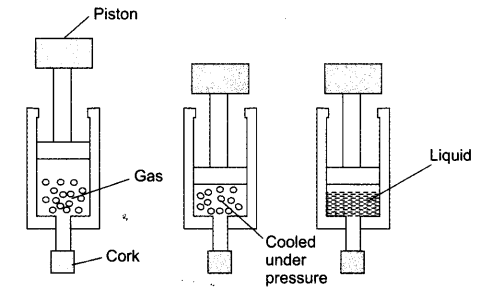
NCERT Textbook Questions – Page 10
Question 1. Why does a desert cooler cool better on a hot dry day?
Answer: The outer walls of the cooler get sprinkled by water constantly. This water evaporates due to hot dry weather. Evaporation causes cooling of inside air of cooler. This cool air is sent in the room by the fan.
Question 2. How does the water kept in an earthen pot (matka) become cool during summer?
Answer: The earthen pot is porous with lot of pores on it, the water oozes out through these pores and the water gets evaporated at the surface of the pot thereby causing cooling effect. This makes the pot cold and the water inside the pot cools by this process.
Question 3. Why does our palm feel cold when we put some acetone or petrol or perfume on it?
Answer: Acetone, petrol or perfume evaporate when they come into contact with air. The evaporation causes cooling sensation in our hands.
Question 4. Why are we able to sip hot tea or milk faster from a saucer rather than a cup?
Answer: Tea in a saucer has larger surface area than in a cup. The rate of evaporation is faster with increased surface area. The cooling of tea in saucer takes place sooner than in a cup. Hence we are able to sip hot tea or milk faster from a saucer rather than a cup.
Question 5. What type of clothes should we wear in summer?
Answe: We should wear light coloured cotton clothes in summer. Light colour because it reflects heat. Cotton clothes because it has pores in it, which absorbs sweat and allows the sweat to evaporate faster thereby giving cooling effect.
Questions From NCERT Textbook for Class 9 Science
Question 1. Convert the following temperatures to the Celsius scale.
(a) 293 K (b) 470 K.
Answer: (a) 293 K into °C
293 – 273 = 20°C
(b) 470 K into °C 470 – 273 = 197°C
Question 2. Convert the following temperatures to the Kelvin scale.
(a) 25°C (b) 373°C.
Answer: (a) 25°C into K
25 + 273 = 298 K
(b) 373°C into K 4 373 + 273 = 646 K
Question 3. Give reason for the following observations.
(a) Naphthalene balls disappear with time without leaving any solid.
(b) We can get the smell of perfume sitting several metres away.
Answer: (a) Naphthalene balls disappear with time without leaving any solid, because naphthalene balls sublime and directly changes into vapour state without leaving any solid.
(b) We can get the smell of perfume sitting several metres away because perfume contain volatile solvent and diffuse faster and can reach people sitting several metres away.
Question 4. Arrange the following substances in increasing order of forces of attraction between the particles—water, sugar, oxygen.
Answer: Oxygen —> water —> sugar.
Question 5. What is the physical state of water at—
(a) 25°C (bj 0°C (cj 100°C
Answer: (a) 25°C is liquid (b) 0°C is solid or liquid
(c) 100°C is liquid and gas
Question 6. Give two reasons to justify
(a) water at room temperature is a liquid.
(b) an iron almirah is a solid at room temperature.
Answer: (a) Water at room temperature is a liquid because its freezing point is 0°C and boiling point is 100°C.
(b) An iron almirah is a solid at room temperature because melting point of iron is higher than room temperature.
Question 7. Why is ice at 273 K more effective in cooling than water at the same temperature?
Answer: Ice at 273 K will absorb heat energy or latent heat from the medium to overcome the fusion to become water. Hence the cooling effect of ice is more than the water at same temperature because water does not absorb this extra heat from the medium.
Question 8. What produces more severe bums, boiling water or steam?
Answer: Steam at 100°C will produce more severe bums as extra heat is hidden in it called latent heat whereas the boiling water does not have this hidden heat.
Question 9. Name A, B, C, D, E and F in the following diagram showing change in its state
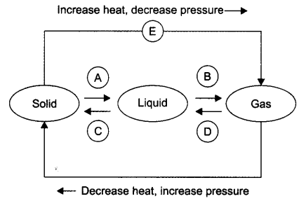
Answer: A —> Liquefication/melting/fusion B —> Vapourisation/evaporation C—>Condensation D—> Solidification E —> Sublimation F —> Sublimation
NCERT Solutions for Class 9 Science Chapter 1 Matter in Our Surroundings (Hindi Medium)
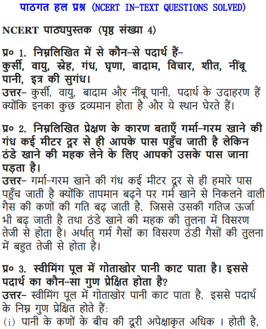
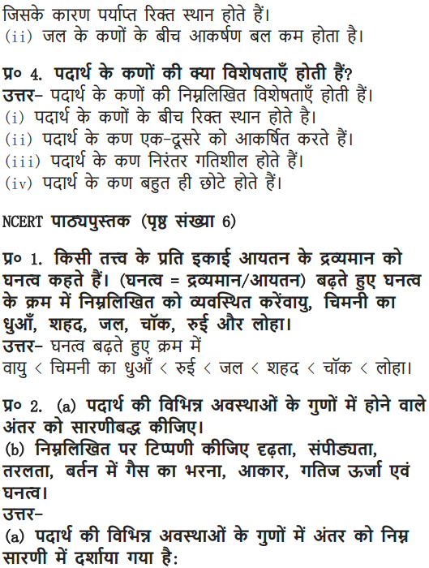
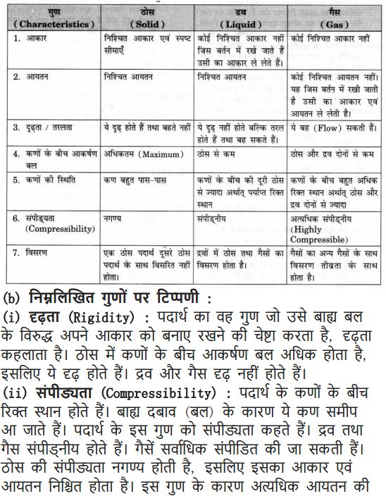
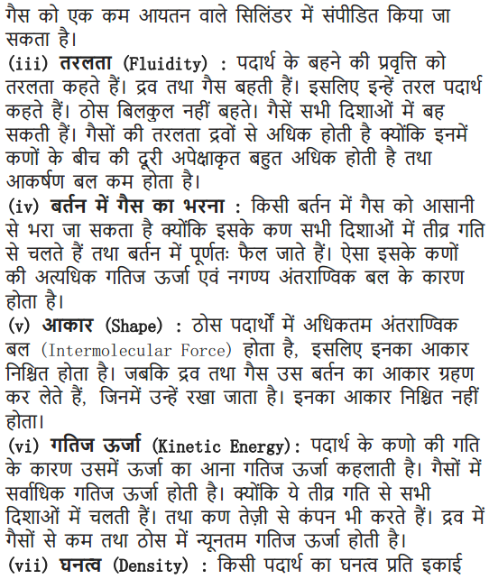
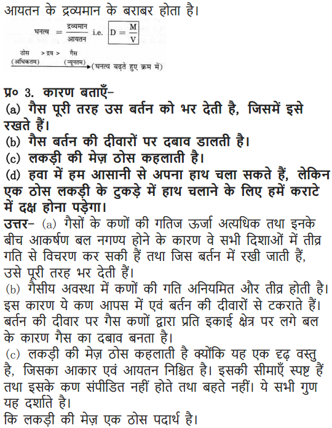
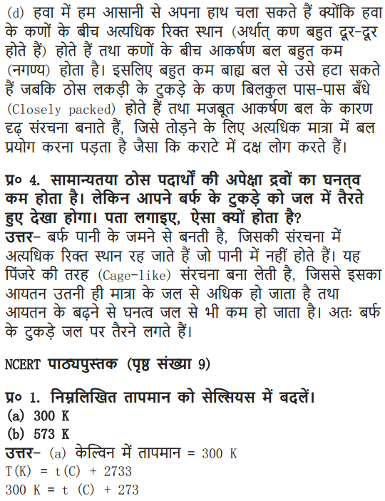
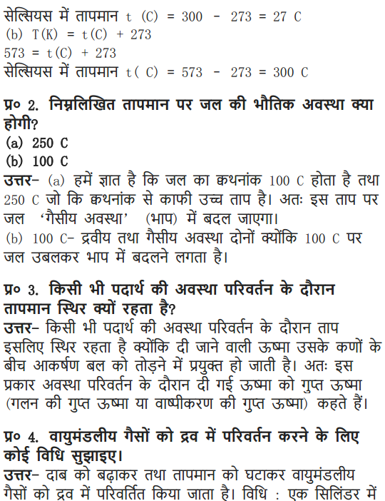
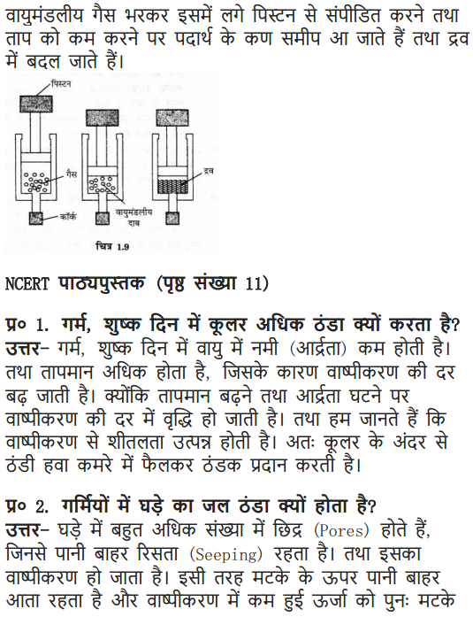
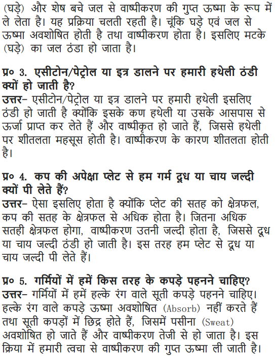
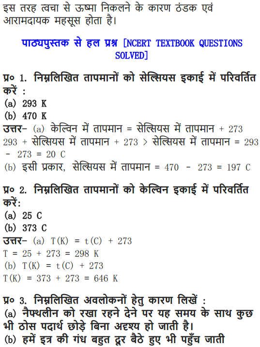
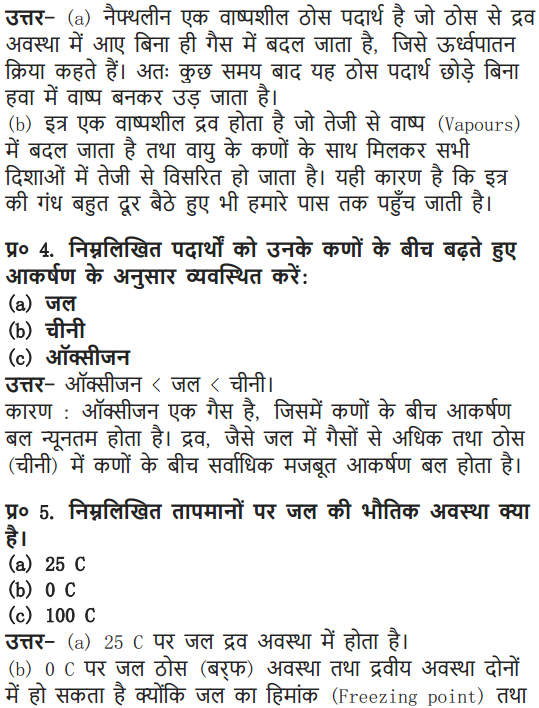
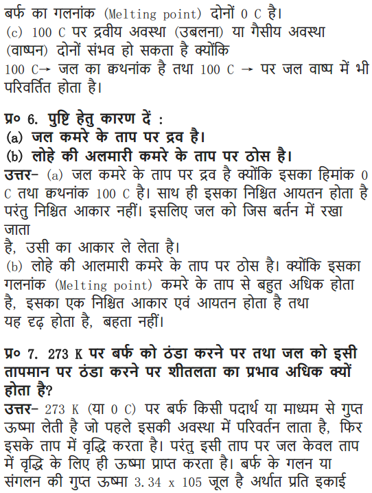
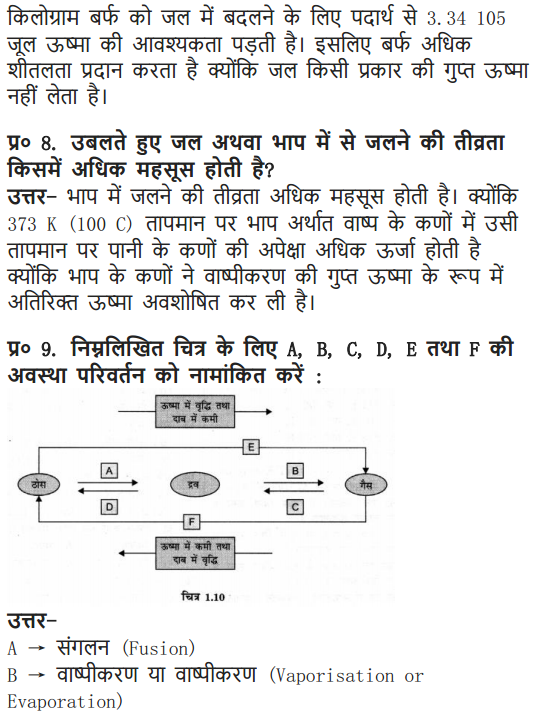
NCERT Solutions For Class 9 Science Chapter 1 – Extra Questions Solved
I. Multiple Choice Questions in Class 9 Science Chapter 1 Matter in Our Surroundings
Choose the correct option:
1. Evaporation of a liquid occurs at
(a) boiling point
(b) a fixed temperature
(c) temperature lower than boiling point
(d) all temperatures
2. The conversion of gas into liquid is called
(a) freezing (b) condensation
(c) sublimation (d) fusion
3. The fusion is the process in which
(a) liquid changes into solid (b) solid changes into liquid
(c) solid changes into gas (d) gas changes into solid
4. The ice floats on water because
(a) its density is more than water (b) its density is less than water
(c) it has less intermolecular space (d) none of the above
5. Ice at 0°C is more effective in cooling than water at the same temperature because
(a) it holds latent heat
(b) the molecules use the heat to overcome the force of attraction
(c) both (a) and (b)
(d) none of the above
6. The density of water is maximum at
(a) 0°C (b) 100°C
(c) 4°C (d) 273 K
7. Solids and gases mix/dissolve in water
(a) because water is a good solvent
(b) because water has intermolecular space
(c) diffusion is faster in water
(d) all of the above
8. Choose the correct statement from the following:
(a) the volume of gas ” expands on heating
(b) two gases cannot diffuse into each other
(c) gas is converted into solid, it is called condensation
(d) gases cannot diffuse in solids
9. As the pressure of air decreases, the boiling point of the liquid
(a) decreases (b) increases
(c) does not changes (d) none of these
10. Which among the following can exist in vapour state?
(a) oxygen (b) hydrogen
(c) carbon dioxide (d) water
11. At normal pressure (1 atmospheric pressure) the boiling point of water is
(a) 98°C (b) 100°C
(c) 110°C (d) 90°C
12. The pressure of air is measured in atmosphere and pascal. 1 atmospheric pressure is equal to
(a) 1.0 1 32 5 x 105 Pa (b) 1.01325 x 104 Pa
(c) 10.1325 x 105 Pa (d) 10.1325 x 106 Pa
13. Cooking of rice at higher altitudes is difficult because
(a) water boils at 100°C (b) water boils at <100°C
(c) boiling point of water is constant (d) none of the above
Answer: 1—(c), 2—(b), 3—(b), 4—(b), 5—(e), 6—(c), 7—(d), 8—(a), 9—(a), 10—(rf), 11 ~(b), 12—(a), 13-(b).
NCERT Solutions For Class 9 Science Chapter 1 VSAQ
Question 1. Define matter.
Answer: Anything that occupies space and has mass is called matter.
Question 2. State different states of matter with an example.
Answer: Matter has 3 different states
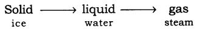
Question 3. What is diffusion?
Answer. The intermingling of molecules of one substance with that of the other is called diffusion.
Question 4. What happen to the rate of diffusion if the temperature is increased?
Answer: With increased temperature, the rate of diffusion also increases as the particles gain energy and vibrate more.
Question 5. Name the state of matter that have the tendency to maintain their shape when subjected to outside force.
Answer: Solid.
Question 6. Define melting point.
Answer: The temperature at which a solid melts to become liquid at the atmospheric pressure is called its melting point.
Question 7. Define boiling point.
Answer: The temperature at which a liquid starts boiling at the atmospheric pressure is known as its boiling point.
Question 8. Define latent heat of vaporization.
Answer: Latent heat of vaporization is the heat energy required to change 1 kg of a liquid to gas at atmospheric pressure at its boiling point.
Question 9. Define latent heat of fusion.
Answer: Latent heat of fusion is the amount of heat energy required to change 1 kg of solid into liquid at its melting point.
Question 10. Define sublimation.
Answer: Sublimation is the change of gaseous state directly to solid state without going through liquid state and vice-versa.
Question 11. What is dry ice?
Answer: Solid carbon dioxide obtained by cooling and applying pressure on carbon dioxide gas. It does not melt so it is called dry ice.
Question 12. What is humidity?
Answer: The air holds water vapour, this air with water is called humid air and the phenomenon is called humidity.
Question.13. Give two properties of solid.
Answer. (1) Solids have fixed shape and are rigid. (2) Solids cannot be compressed.
Question.14. What will happen if the pressure is reduced on solid carbon dioxide (dry ice)?
Answer. If the pressure is reduced on solid carbon dioxide it will directly change into gaseous state without melting.
Question 15. dame any three substances that show sublimation.
Answer: Ammonium chloride, camphor and naphthalene balls.
Question 16. Sponge is solid, but we can still compress it. Why?
Answer: Sponge is a solid with minute pores in it. When we press the sponge the air present in these pores is released out and hence we are able to compress it.
Question 17. What is normal atmospheric pressure?
Answer: The atmospheric pressure at sea level is 1 atmosphere and taken as the normal atmospheric pressure.
Question 18. What is Kelvin?
Answer: Kelvin is the SI unit of temperature (0°C = 273 K).
Question 19. Give two examples of diffusion.
Answer: Milk drops dissolved in water and perfume sprayed in a room.
Question 20. Give the temperature at which water exists in two different phases/states.
Answer: At 0°C water can be in solid or in liquid state.
At 100°C water can be in liquid or in gaseous state.
NCERT Solutions For Class 9 Science Chapter 1 SAQ
Question 1. Why do we see water droplets collected on the outer surface of a glass container, containing ice?
Answer: The water vapour present in air, comes in contact with the cold outer surface of the container thereby condensing it to form water droplets.
Question 2. Explain why solids have fixed shape but liquids and gases do not have fixed shape.
Answer: Solids have fixed shape due to strong intermolecular force of attraction between them. The liquids and gases have molecules with less intermolecular force of attraction and hence they can flow and take shape of the container.
Question 3. Liquids and gases can be compressed but it is difficult to compress solids. Why?
Answer: Liquids and gases have intermolecular space, on applying pressure externally on them the molecules can come closer thereby minimizing the space between them. But in case of solids there is no intermolecular space to do so.
Question 4. A balloon when kept in sun, bursts after some time. Why?
Answer: The balloon has air filled in it. The balloon when kept in sun gets heated and the air inside it also gets heated. The molecules of air get energy, and vibrate faster thereby exerting large force on the walls of the balloon. Due to this expansion of gases the balloon bursts.
Question 5. Why do people perspire a lot on a hot humid day?
Answer: On a hot, humid day, due to the heat our body starts sweating for the cooling mechanism i.e., by evaporation and gets cooling effect. But the air cannot hold any more water on a humid day and therefore the sweat or perspiration is seen.
Question 6. Distinguish between evaporation and boiling.
Answer:

Question 7. Why is it advisable to use pressure cooker at higher altitudes?
Answer: At higher altitudes, the atmospheric pressure is low and the water boils very fast and evaporates at faster rate therefore the pressure is required to increase the cooking process and this is done by using pressure cooker which increases the pressure inside the container and cooks food faster.
Question 8. What are fluids?
Answer: The states of matter that can flow due to less intermolecular force of attraction, are liquids and gases and are called as fluids.
Question 9. One kg cotton and one kg sand, which is more denser? Why?
Answer: One kg sand is more denser than 1 kg cotton because density = mass/volume .
The volume required by cotton is more than the sand and density and volume are inversely proportional.
Question 10. Why is water liquid at room temperature?
Answer: At room temperature, the molecules of water have some intermolecular force of attraction and the room temperature cannot provide sufficient heat for these molecules to overcome their force of attraction and therefore remain in liquid phase.
Question 11. State the differences between solid, liquid and gas.
Answer:

Question 12. Cotton in solid but it floats on water. Why?
Answer: Cotton has large number of pores, in which air is trapped. Hence reducing its density and increasing the volume. Therefore cotton floats on water. But when these pores get filled with water it starts sinking.
Question 13. Why arc solids generally denser than liquids and gases?
Answer: Density of a substance is given by a formula= Mass/Volume
In case of solids the molecules are tightly packed and hence large mass is concentrated in very small volume. Hence their density is more. But in case of liquids and gases, their molecules have intermolecular space and hence they don’t have large mass concentrated in small volume. So the density of solids is generally more than that of the liquids and gases.
Question 14. On a hot sunny day, why do people sprinkle water on the roof or open ground?
Answer: During hot sunny day, the surface of roof or ground absorbs large amount of heat and remains hot, on sprinkling water on these surfaces, the water absorbs large amount of heat from the surface due to its large latent heat of vaporisation thereby allowing the hot surface to cool.
Question 15. On a hot sunny dug why do we feel pleasant sitting under a tree?
Answer: Tree has lot of leaves which constantly show transpiration. Transpiration is loss of water through small tiny pores of leaves called stomata. When this water comes on the surface of leaf the water evaporates thereby causing cooling effect. Therefore we feel pleasant sitting under the tree on a hot sunny day.
Question 16. The U’mpeuiUnc at which liquids change into vapours is very high, for example, water vaporises at 100°C then how is n possible for water to evaporate at room temperature or at are other temperature?
Answer: The molecules of water present on the surface of the exposed area which are in very small fraction, gains the energy from the surrounding. With this higher kinetic energy they are able to break the force of attraction between them and hence get converted into vapour state.
This phenomenon of change of a liquid into vapours that takes place at any temperature below its boiling point is called evaporation.
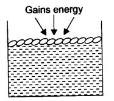
Question 17. Name the factors that affix l evaporation.
Answer: The rate of evaporation will increase with
(1) an increase of surface area,
(2) an increase of temperature,
(3) a decrease in humidity,
(4) an increase in wind speed.
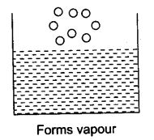
Question 18. The melting point of ice is 273.16 K. What does this mean? Explain in detail.
Answer: Ice is solid at 0°C i.e., 273° K. The molecules of ice are tightly packed. These molecules have to overcome the force of attraction with which they are held
and hence they gain this heat from the surrounding but the temperature remains the same as their energy is used to overcome the force of attraction between the particles. The particles have their state and starts vibrating freely and a stage reaches when the solid ice melts and is converted to liquid state at the same temperature i.e., 273 K.
Question 19. How is the high compressibility property of gas useful to us?
Answer: The gases have high compressibility. This property is used in the following situation:
(1) LPG (liquefied petroleum gas) is a fuel which is made up of petroleum gas. On compressing this petroleum gas it forms liquid.
(2) Oxygen cylinders in the hospitals have compressed gas filled in it.
(3) CNG (compressed natural gas) is a natural gas, methane, which is compressed and used as a fuel in vehicles and at home.
Question 20. With the help of an example, explain how diffusion of gases in water is essential?
Answer: The gases from the atmosphere diffuse and dissolve in water. Gases like oxygen and carbon dioxide diffuse in water, are essential for the survival of aquatic animals and plants.
Animals breathe in this oxygen dissolved in water for their survival and plants can use carbon dioxide dissolved in water for photosynthesis.
NCERT Solutions For Class 9 Science Chapter 1 LAQ
Question 1. Pressure and temperature determine the state of a substance. Ex-plane this in detail.
Answer: (1) Any matter i.e., solid, liquid or gas when experiences an increase in temperature then they change their state.
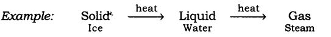
Take ice cubes in a beaker or heat them slowly, the temperature increases and the ice melts to form liquid. Heat this liquid further it will become steam.
(2) On lowering down the temperature of any matter, show change in their state.
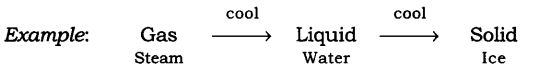
Take the steam that is coming out of a boiling water and allow it to cool down, it condenses to form water and on further cooling of this water we get ice.
(3) On applying pressure and reducing temperature we can liquefy gases or change them into solid.
Example: Take carbon-dioxide gas, reduce its temperature and apply lot of pressure on it so that it changes into solid carbon dioxide, called diy ice, which is used as refrigerant for cooling.
If the pressure on it is decreased it directly changes into gas.
In LPG cylinders, the petroleum gas is cooled and with lot of pressure changes it into liquid state.
While using this LPG, we release the pressure exerted on it and hence it comes out in the form of gas.
Question 2. Explain giving examples the various factors on which rate of evaporation depends.
Answer: The rate of evaporation depends on the following factors:
(1) Surface area: If the surface area is increased the rate of evaporation also increases.
(a) To dry the clothes we spread them to dry faster.
(b) Tea in saucer cools faster than in a cup.
(2) Temperature: If the temperature is increased the rate of evaporation also increases. Due to increase in temperature the particles gain more kinetic energy and change their phase from liquid to gaseous. Water will evaporate faster in sun than in shade.
(3) Humidity: It is the amount of water vapour present in air. The air can hold definite amount of water vapour, at a given temperature. If the amount of water vapour is high in the air then the rate of evaporation decreases. On hot and humid day, desert coolers are not effective as the air cannot hold any more moisture to get the cooling effect.
(4) Wind speed: With the increase in wind speed, the rate of evaporation increases. The particles of water vapour move away with the wind, decreasing the amount of water vapour in the surrounding.
NCERT Solutions For Class 9 Science Chapter 1 Value Based Questions
Question 1. Adil parked his bicycle on a sunny day in a parking stand of his school campus. When the school got over Adil saw his burst cycle type. Thereafter he kept less air in his cycle types and did not inflate them fully.
(a) Why did the type burst?
(b) Why is air compressible?
(c) What value of Adil is reflected in the above act?
Answer: (a) The tyre burst because the air inside the tyre got heated and therefore exerted pressure on the walls of the tyre.
(b) Air is compressible because it has large intermolecular space.
(c) Adil showed the value of intelligence, awareness, and self-responsibility.
Question 2. Akshay’s friend visited his house in Mumbai and he was surprised to see air conditioners installed in all of his rooms. His friend advised Akshay to use water-coolers and save electricity. On this Akshay told, him that the water-cooler is not at all effective in coastal areas.
(a) Why are water-cooler not effective in coastal areas?
(b) What are the other two factors on which evaporation of water depends?
(c) What value of Akshay’s friend is seen in this act?
Answer: (a) Water coolers are not effective in coastal areas due to high rate of humidity.
(b) The other two factors on which evaporation of water depends are temperature and surface area.
(c) Akshay’s friend showed the value of concerned citizen, morally responsible and friendly in nature.
Question 3. Sita lived in a village and could, not afford refrigerator in her house. She knew how to keep water cold and preserve all perishable items in her house. She kept ivet cloth surrounding the earthen pot to keep water cool, she also kept vegetables fresh by keeping them in wet gunny bag and timely sprinkled water over it.
(a) Why did Sita keep wet cloth surrounding the earthen pot?
(b) Suggest one more method of keeping the house cool in summer.
(c) What value of Sita is reflected in the above case?
Answer: (a) The wet cloth gave the cooling effect to the pot, as the water in the cloth evaporated and evaporation causes cooling effect.
(b) By sprinkling some water on the lawn/veranda of the house can keep the house cool.
(c) Sita showed the value of responsible behaviour.
Question 4. Shreya commutes in a CNG fitted van to school every day along with many other students. She told the van driver to get the CNG connection certified and timely checked it for any leakage or loose connection of pipes. She told the driver to be more careful during summers.
(a) What is CNG?
(b) Why should one be more careful with CNG cylinders during summer?
(c) What value of Shreya is seen in the above act?
Answer: (a) CNG is Compressed Natural Gas used as fuel.
(b) During summers, the CNG connections and cylinder need to be checked because the gas expands due to heat and if there would be any leakage then it would cause fire in the vehicle.
(c) Shreya showed the value of concerned citizen and morally responsible behaviour.
NCERT Solutions for Class 9 Science – List of Chapters
- Chapter 1 Matter in Our Surroundings
- Chapter 2 Is Matter Around Us Pure
- Chapter 3 Atoms and Molecules
- Chapter 4 Structure of the Atom
- Chapter 5 The Fundamental Unit of Life
- Chapter 6 Tissues
- Chapter 7 Diversity in Living Organisms
- Chapter 8 Motion
- Chapter 9 Force and Laws of Motion
- Chapter 10 Gravitation
- Chapter 11 Work, Power And Energy
- Chapter 12 Sound
- Chapter 13 Why Do we Fall Ill
- Chapter 14 Natural Resources
- Chapter 15 Improvement in Food Resources